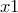
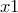
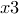
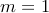
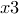
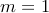

The axes of plots can be linked together, in such a way that they always share a common scale. This can be useful when placing plots next to one another, firstly, of course, if it is of intrinsic interest to ensure that they are on a common scale, but also because the two plots then do not both need their own axis labels, and space can be saved by one sharing the labels from the other. In PyXPlot, an axis which borrows its scale and labels from another is called a “linked axis”.
Such axes are declared by setting the label of the linked axis to a magic string such as “linkaxis 0”. This magic label would set the axis to borrow its scale from an axis from plot zero. The general syntax is “linkaxis  ”, where and are two integers, separated by a comma or whitespace. The first, , indicates the plot from which to borrow an axis; the second, , indicates whether to borrow the scale of axis ,
”, where and are two integers, separated by a comma or whitespace. The first, , indicates the plot from which to borrow an axis; the second, , indicates whether to borrow the scale of axis ,  , , etc. By default, . The linking will fail, and a warning result, if an attempt is made to link to an axis which doesn’t exist.
, , etc. By default, . The linking will fail, and a warning result, if an attempt is made to link to an axis which doesn’t exist.